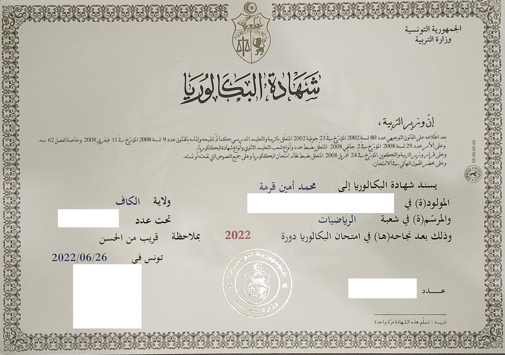
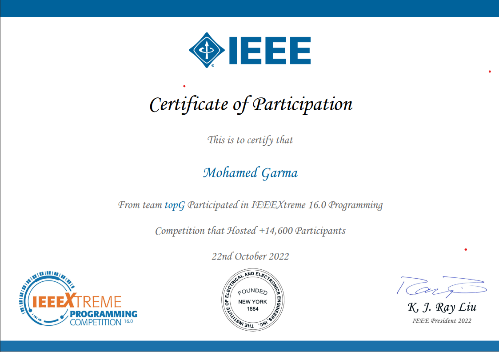
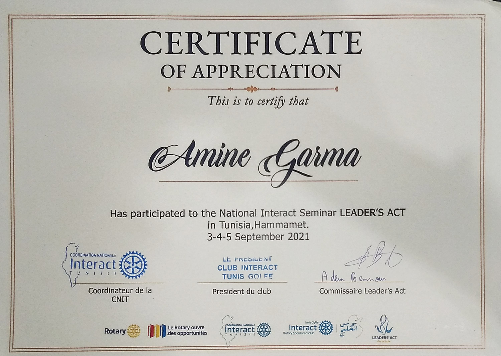

Sopra HR Software
DevOps, systems administration & Python backend internshipPython backend deployment, environment automation, application health checks and Mistral-assisted incident analysis.
I’m Mohamed Amine Garma, a final-year Cloud Engineering student at ESPRIT. I enjoy the work between an application and the infrastructure that makes it run.
From private-cloud infrastructure and residential management to document intelligence. Projects I’ve worked on during my studies and internships.
I’m studying Computer Engineering at ESPRIT, specialising in Cloud Engineering. Building applications taught me to care about the whole system: the code, its environment and what happens after deployment.
In a seven-person academic team, I helped build an OpenStack private cloud with one controller, four compute nodes and two storage nodes. That experience drew me towards infrastructure automation, containers and monitoring.
CV en français ↗Python backend deployment, environment automation, application health checks and Mistral-assisted incident analysis.
PDF field extraction and French document-processing workflows, from form templates to AI-assisted entity extraction.
Exposure to telecommunications testing and technical compliance workflows.
Participation, membership and community experiences. The original certificates are available to view below.

Lycée Les Berges du Lac 2
2018–2022 · Diploma awarded in 2022

Programming competition · Team topG
22 October 2022

National Interact Seminar · Hammamet
3–5 September 2021
I’m looking for a six-month Cloud / DevOps internship starting in February or March 2027. Open to international opportunities and relocation.
Get in touch ↗mohamedamin.garma@gmail.com